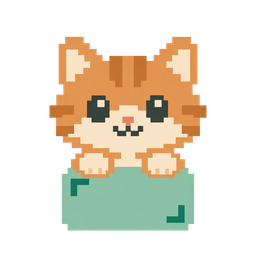

截完就能用
框选后松手，截图就会贴在桌面并复制。鼠标移到贴图上，即可画箭头、加文字或编号，再保存。
macOS ⌘ ⇧ 1 · Windows Ctrl Shift 1
截图猫SCREENSHOT CAT / 桌面工具
随时框选截图、录制和贴图。复制过的文字和图片，一按就能找回来。平时待在系统托盘或菜单栏。
下载截图猫MIT 开源 · Rust + Tauri · 内置 FFmpeg
框选后松手，截图就会贴在桌面并复制。鼠标移到贴图上，即可画箭头、加文字或编号，再保存。
macOS ⌘ ⇧ 1 · Windows Ctrl Shift 1录短 GIF 或持续录制 MP4；录制时可在选区内绘制，也能切回操作原窗口。当前仅录制画面。
macOS ⌘ ⇧ 2 · Windows Ctrl Shift 2复制的文字和图片只在本机后台记录，按快捷键才打开底部横栏。搜索后点击条目即可粘贴。
macOS ⌘ Control V · Windows Ctrl Alt VDOWNLOAD
macOS 请在「关于本机」查看芯片类型。
macOS 安装包尚未经过 Apple 公证。截图与录制需要屏幕录制权限；跨应用自动粘贴需要辅助功能权限。查看版本说明、应用 ZIP 和第三方许可。